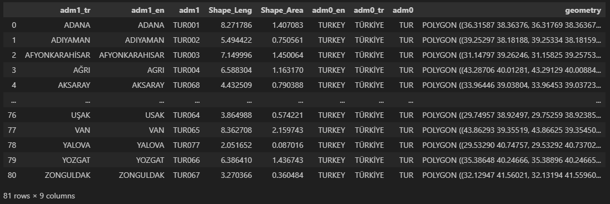
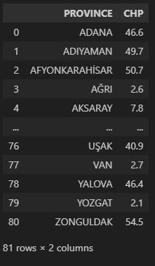
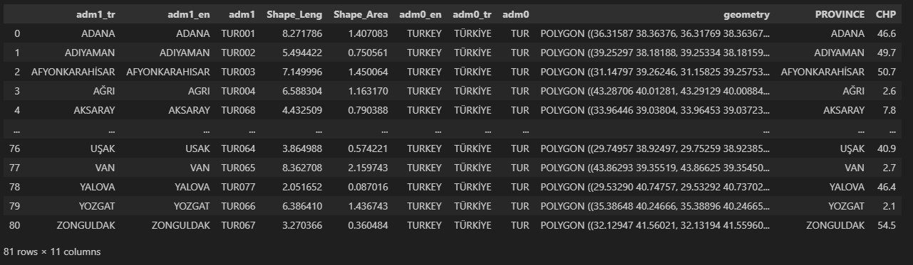
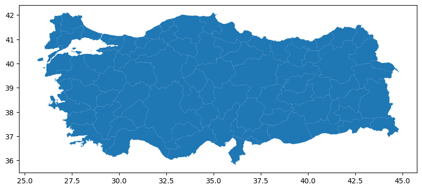
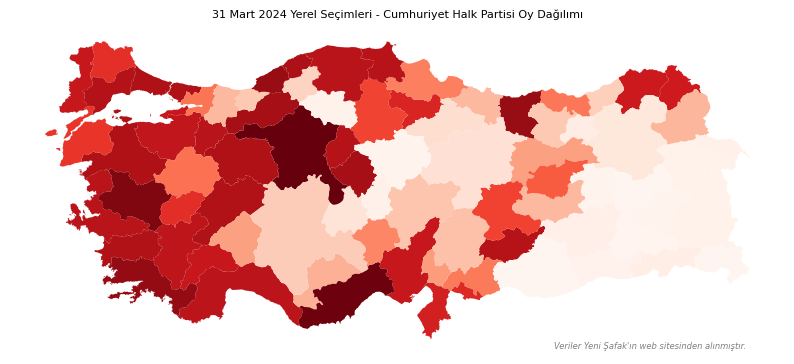
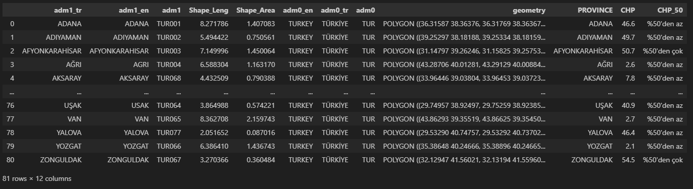
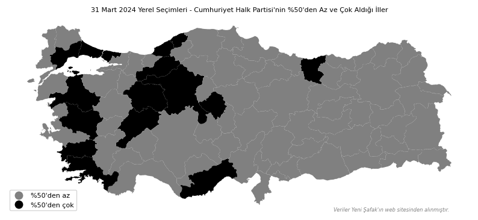

import json
import pandas as pd
import geopandas as gpd
import matplotlib.pyplot as plt
from matplotlib.colors import ListedColormapGiriş
31 Mart 2024 yerel seçimlerini geride bıraktık ancak biz Türkiye’de yaşayanlar için iki seçim arası kısa bir reklam arası gibi. Önümüzdeki seçimlere hazırlıklı olmak için bu arayı değerlendirmeye devam ediyoruz.
Bu uygulamada, CHP’nin iller bazında aldığı oyları harita üzerinde göstereceğiz. local_elections_province_20240331 isimli JSON dosyasında bulunan verilere buradan ulaşabilirsiniz.
Harita üzerinde görselleştirme yapmak için geopandas kütüphanesini kullanacağız. geopandas, isminden de anlaşılacağı üzere, popüler veri bilimi kütüphanesi pandas’ı jeo-uzamsal veriler ile destekleyip genişletiyor.
Haritada görselleştirmek için öncelikle Türkiye’nin .shp uzantılı dosyasını bulmamız gerekiyor. .shp, coğrafi verileri depolamak için kullanılan bir vektör veri formatıdır. Buradan turkey_administrativelevels0_1_2.zip isimli dosyayı indirebilirsiniz. Eğer bir problem ile karşılaşırsanız burada bulunan dosyayı da indirebilirsiniz.
Kullanılacak Kütüphaneler
Verilerin Hazırlanması
read_file() fonksiyonu ile .shp uzantılı dosyayı içeri aktaralım.
shapefile_tr = gpd.read_file('turkey_administrativelevels0_1_2/tur_polbnda_adm1.shp')
print(shapefile_tr)
shapefile_tr ile birleştireceğimiz seçim verilerinin yer aldığı JSON dosyasını içe aktaralım.
with open('local_elections_province_20240331.json', 'r', encoding='utf-8') as file:
data = json.load(file)
df = pd.DataFrame(data['Data'])
print(df)
shapefile_tr tablosundaki adm1_tr sütunu ile df tablosundaki PROVINCE sütununu kullanarak iki tabloyu birleştireceğiz.
merged_df = pd.merge(
shapefile_tr,
df,
left_on='adm1_tr',
right_on='PROVINCE',
how='left'
)
Birleştirdikten sonra harita aşamasına geçebiliriz.
Haritanın Oluşturulması
Haritayı en temiz haliyle görelim.
fig, ax = plt.subplots(figsize = (10,10))
merged_df.plot(ax=ax)
plt.show()
Şimdi verileri haritaya gönderelim ve görselin daha profesyonel görünmesini sağlayalım.
fig, ax = plt.subplots(figsize = (10,10))
merged_df.plot(ax=ax, column='CHP', cmap='Reds')
ax.axis('off')
ax.set_title(
'31 Mart 2024 Yerel Seçimleri - Cumhuriyet Halk Partisi Oy Dağılımı',
fontdict = {'fontsize': 8}
)
ax.text(
0.95,
0.01,
"Veriler Yeni Şafak'ın web sitesinden alınmıştır.",
color='gray',
fontsize=6,
fontstyle='italic',
ha='right',
va='bottom',
transform=ax.transAxes
)
plt.show()
Neler yaptık? İnceleyelim.
Öncelikle, plt.subplots() ile bir Figure ve Axes nesnesi oluşturuyoruz. Sonrasında, merged_df isimli DataFrame’den gelen verileri kullanarak harita oluşturuyoruz ve bu işlemi plot() ile gerçekleştiriyoruz. column parametresi haritada renk kodlaması yapılacak sütunu belirtirken, cmap parametresi renk haritasını belirler. Sadece haritanın görüntülenmesini sağlamak için ax.axis() ile eksenleri kapalı hale getiriyoruz. ax.set_title() ile haritanın başlığını ayarlıyoruz. Son olarak, ax.text() ile sağ alt köşeye bir metin ekliyoruz ve plt.show() ile grafiği görüntülüyoruz.
Yukarıda sürekli verileri kullandık. Peki, kategorik verileri harita üzerinde nasıl gösterebiliriz?
CHP’nin %50’den az ve çok aldığı illeri görselleştirmek istediğimizi varsayalım.
merged_df['CHP_50'] = merged_df['CHP'].apply(
lambda x: '%50\'den az' if x < 50 else '%50\'den çok'
)
colors = {
"%50'den az": "gray",
"%50'den çok": "black"
}
cmap = ListedColormap(list(colors.values()))
fig, ax = plt.subplots(figsize = (10,10))
merged_df.plot(
ax=ax,
column='CHP_50',
cmap=cmap,
legend=True,
legend_kwds={'loc': 'lower left', 'fontsize': 8}
)
ax.axis('off')
ax.set_title(
"31 Mart 2024 Yerel Seçimleri - Cumhuriyet Halk Partisi'nin %50'den Az ve Çok Aldığı İller",
fontdict = {'fontsize': 8}
)
ax.text(
0.95,
0.01,
"Veriler Yeni Şafak'ın web sitesinden alınmıştır.",
color='gray',
fontsize=6,
fontstyle='italic',
ha='right',
va='bottom',
transform=ax.transAxes
)
plt.show()
Farklı neler yaptık? İnceleyelim.
colors isminde bir sözlük tanımladık. Bu sözlük, görselleştirmede kullanılacak renkleri ve bunlara karşılık gelen kategorileri içeriyor. Ayrıca, cmap isminde bir ListedColormap nesnesi oluşturduk. Bu, renk paletini belirtiyor ve colors sözlüğünden alınan renklerle oluşturuluyor. Önceki haritada olmayan, bu haritada sol alt köşede bulunan lejant ise kategorilerin tanımlarını içeriyor.
Gelecek içeriklerde görüşmek dileğiyle.